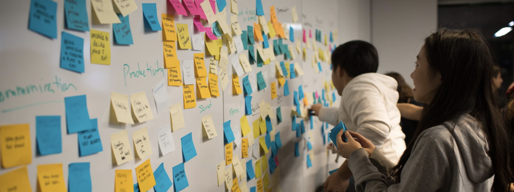
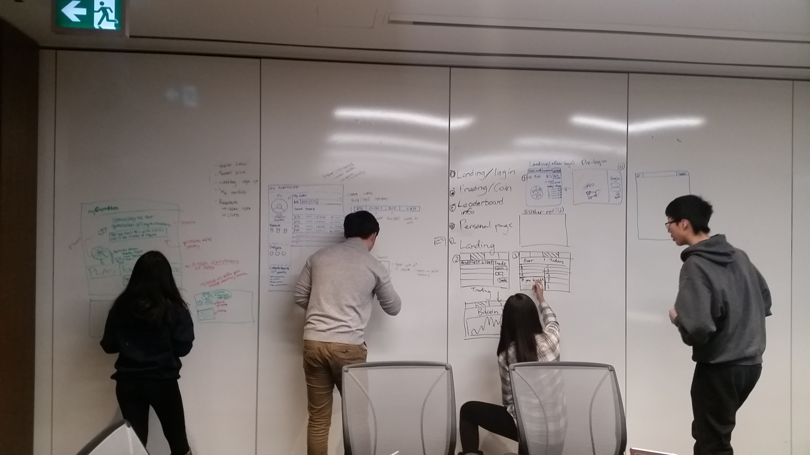

Mathurah Ravigulan 💻
Co-founded and led a team of 40 as Chief Product Officer to build a CryptoCurrency Market Simulator.
Check out the product here
Check out the pitch deck here
MyCryptoHippo was a Junior Achievement Company sponsored by Deloitte.
- Created wireframes and mockups for the minimum viable product (MVP), which can be viewed here
- Led the company of 40 on a shared product vision
- Organized 3 successful product design sprints
- Launched a #behindtheproduct blog to document the production process
- Utilized Sketch, Adobe Illustrator, Invision, GitHub, Trello, HTML & CSS, PHP, and JavaScript to develop the product and manage the technology architecture
- Pitched and developed business plan to gain over $13,000 in funding and winning international pitch competitions
- For more details, I wrote a blog post about what I learned during my journey as Chief Product Officer
🤔 The Problem
The two main problems this product solves is the inaccessibility of the blockchain industry and the complicated purchasing process. Young students are left in the dark because they lack sufficient funds to invest, can't learn without risking, and they have to be over 18 to invest.
I identified this problem after doing market research with a survey of over 500 students in Toronto. We then gathered a small sample size to do user interviews in person to finally define the problem space.
I turned our question into How Might We Make Cryptocurrency easy, fun, and accessible for Gen Z?
💭 The process
It took a lot of sticky notes to make this happen.
And whiteboarding.
I started off leading my team at design sprints, where we whitebaorded our design ideas, synthesized, and prioritzed features for version 1. As head of product, I created a roadmap of features that were feasible to build. I presented my work at weekly standups.
I managed team communication on Slack and Trello, ensuring everything was transparent. We were really a product family!
On the dev side when we were testing our beta version, I created a process on Trello for bug reporting.

Click below to see the mockups!
🏆 Awards won
Alongside my role as Chief Product Officer, I played a key role on the pitch team.
- Protohacks educational hackathon third place (Jan 2018)
- Second place at the Junior Economic Club Challenge
- Junior Achievement Central Ontario Company of the Year (May 2018)
- Junior Achievement Central Ontario Return on Investment Award (May 2018)
- Junior Achievement Central Ontario Most Innovative Company(May 2018)
- First place socially responsible business SAGE Canada (May 2018)
- Third place SAGE Globals competition in South Africa (August 2018)
- First place in the FedEx Business Challenge, winning $75,000 for the JA Central Ontario Charter
- $10,000 Peter Mansbridge Youth Innovation Award - awarded to one student across Canada - as a result of my contributions
📹 Junior Achievement Journey Video
I was nominated for an award and made a video about my journey and learnings from being a part of the Junior Achievement Company program.